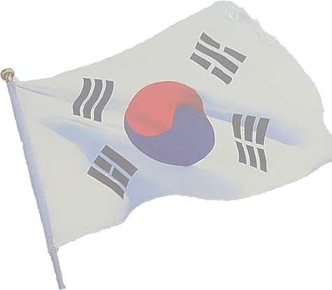

‘위안부 모집’(Comfort Women Wanted)이란 포스터로 일본군 위안부 인권유린 실상을 고발한 한인 작가의 강연과 다큐멘터리 상영전이 남가주 3개 대학에서 열린다. 18일 가주한미포럼(대표 윤석원)은 뉴욕타임스 등 주요 언론과 미술계에서 주목받은 한인 1.5세 이창진 작가의 강연과 작품전이 24일부터 3일 동안 USC, UCLA, UC리버사이드에서 진행된다고 밝혔다. 가주한미포럼은 위안부 모집이란 포스터를 계기로 전쟁범죄와 인권유린 아픔을 되새겨 볼 수 있다고 전했다. 이창진 작가의 강연과 작품전은 2차 세계대전 당시 일본군이 저지른 여성 인권유린 역사에 초점을 맞췄다. 이 작가는 한국과 중국, 대만, 인도, 네덜란드, 필리핀 등 7개 나라를 돌며 위안부로 끌려간 여성들을 인터뷰한 다큐멘터리를 만들었다. 또한 2차 세계대전 당시 일본군이 위안부를 모집한다는 광고에 착안해 실제 위안부들의 젊었을 때 사진을 담은 포스터(사진)도 완성했다. 이 작품은 실제 뉴욕, 서울 등 거리에 전시돼 큰 반향을 일으키기도 했다. 이창진 작가는 “신문기사를 보고 알게 된 일본군 위안부 역사를 알아갈수록 충격을 받았다”며 “일본은 아시안과 네덜란드 등 어린 여자 아이들을 데려다 잔인한 방법으로 성적 노리개로 삼았다. 이것은 세계 여성인권 문제로 전 세계가 주목해야 할 문제”라고 강조했다. 한편 위안부 모집 강연과 다큐멘터리 상영은 24일 오후 7시 USC 레이 스타크 극장, 25일 오전 10시 UCLA 로이스 홀, 26일 오후 2시 UC리버사이드 CHASS #1128에서 각각 진행된다. www.changjinlee.net
